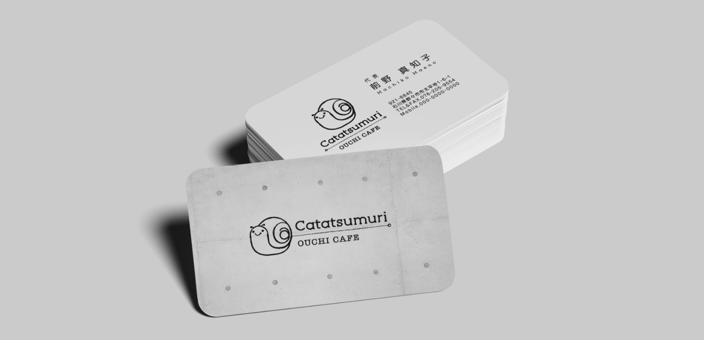
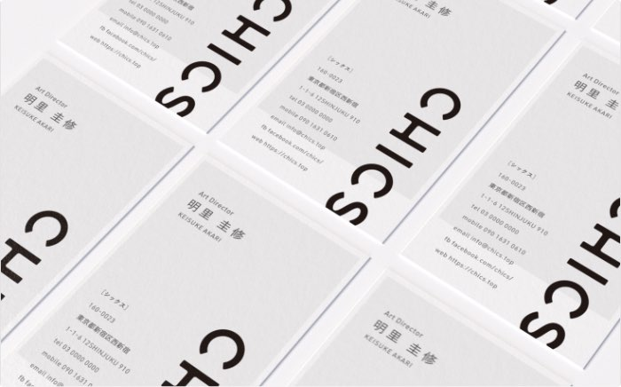
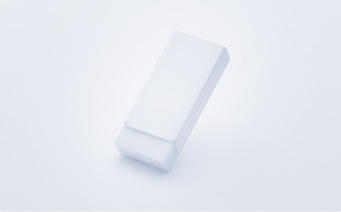
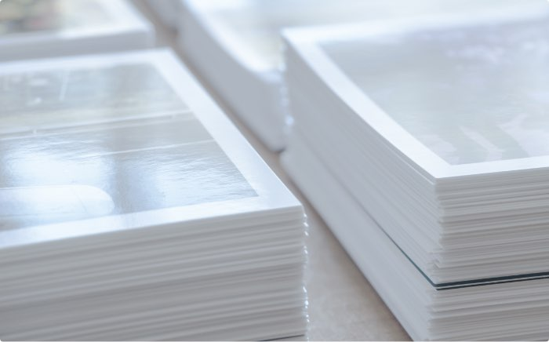
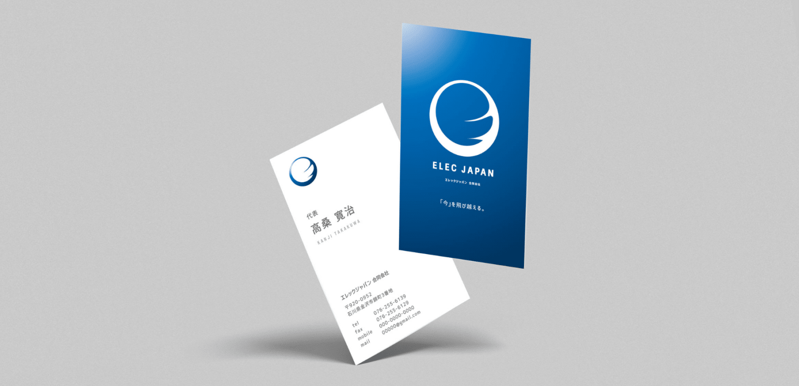
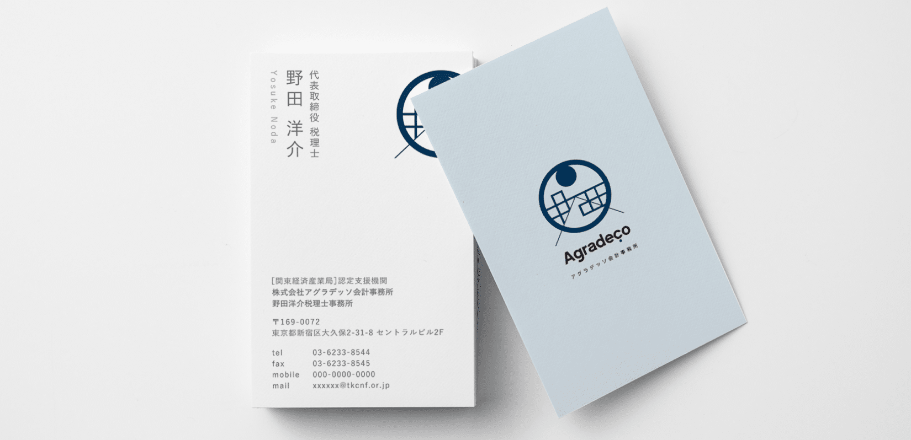
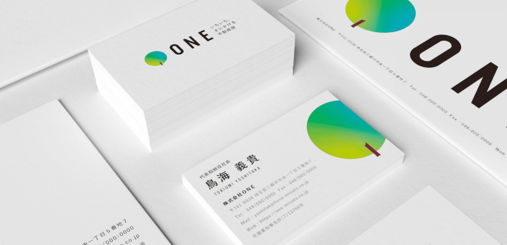
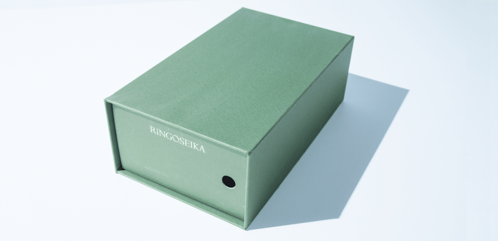
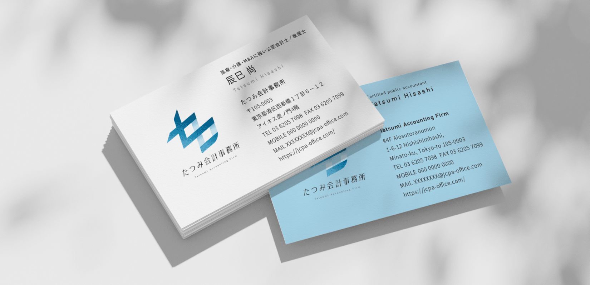

その世界観は、まずロゴ作りから始まります。ロゴは一番思いがこもる場所。CHICSは、そこを大切にするチームです。
ロゴ制作を相談する →ショップカードとは、飲食店や美容室、雑貨店など店舗を構えるお店が、お客様に手渡すカードのことです。名刺のようにスタッフの連絡先を伝えるものではなく、お店の存在そのものを覚えてもらう、あるいはスタンプカード・ポイントカードとして再来店を促す役割を持ちます。お客様の手元に残り、財布やバッグの中で何度も目に触れるからこそ、名刺以上に「お店の第一印象」を長く担う存在です。
だからこそ、ショップカードのデザインはロゴと切り離して考えることができません。ショップカードだけを単体で外部に発注すると、お店のロゴやメニュー、内装が持っている世界観と、カードの書体・配色・余白の取り方がちぐはぐになってしまうことが少なくありません。お客様は「なんとなく雑な印象」としてそのズレを感じ取りますが、多くの場合、お店側はそのズレに気づかないまま印刷・配布してしまいます。
CHICSは、ロゴマーク制作を軸にしたVI(ビジュアルアイデンティティ)開発の専門チームです。ロゴ制作の中で培った「お店の世界観を一つの記号に落とし込む」視点をそのままショップカードの設計に持ち込むことで、単体発注では実現しにくい一貫性を作ります。オーダーメイドによる唯一無二の品質、修正回数無制限、印刷対応まで一気通貫という強みも、ロゴからショップカードまで同じチーム・同じ担当者が手がけるからこそ成立しています。

実例：Catatsumuri(カフェ)のショップカード

お店を始めるとき、開業する方が一番時間をかけて考えるのはロゴです。屋号の由来、伝えたい世界観、お客様にどう見られたいか。ショップカードも含めて、すべてのデザインの起点はそのロゴにあります。CHICSは、そこを一番大切に作るチームです。

大切にしたいのは、お客様が心から満足できるものを納品すること。ロゴとショップカードの色味・書体・余白といった微調整も、制作期間内であれば回数を気にせず、納得いくまで何度でも対応します。CHICSの制作全体に共通する強みです。

ロゴ制作から着手し、そこから一貫してショップカードの印刷・製作まで対応します。小ロットでの印刷にも対応できるため、ビジネスのスモールスタートにもご利用いただけます。印刷会社を別途探す手間がないのも、まとめて依頼いただく理由の一つです。
データだけで終わらせない。
印刷まで、CHICSの仕事です。
せっかく良いデザインができても、印刷の仕上がりで台無しになってしまうことがあります。紙の質感、色の出方、断ち切りの精度。CHICSはデザインだけで終わらせず、印刷会社との連携までを含めてご提案するので、データと現物のズレに悩む必要がありません。
小ロットでの印刷にも対応しているため、まずは少部数から始めたいお店にも向いています。増刷が必要になった際も、データ管理はCHICS側で行っているので、メールやお電話一本でご連絡いただくだけで対応できます。
ロゴ制作を軸に、CHICSが手がけた実例です。飲食店のショップカードから、士業・製造業の名刺・封筒まで、業種を問わずロゴから一貫して設計しています。デザインの傾向は業種によって様々ですが、どの実績にも共通しているのは「ロゴの世界観が、そのまま紙もの・ツールにまで貫かれている」という点です。





※実績はCHICS公式サイト(chics.top)の公開実績から掲載。「LOGO + SHOP CARD」はショップカードを含む実例、「LOGO + CARD」は名刺・封筒等のカード類を含む実例、「LOGO + PACKAGE」はパッケージを含む実例です(表記を分けて正確に掲載しています)。
ロゴ制作から、ショップカードの印刷・納品まで。
一枚のカードにも、
ロゴと同じだけの手間をかける。
ショップカードは、印刷してしまえば後から直せません。だからこそCHICSは、ロゴ制作と同じ工程・同じ担当者で、色味や余白の1mm単位までこだわって仕上げます。
業界経験平均15年以上のグラフィックデザイナーが、アートディレクションから実制作まで担当。お店の商品・ブランドが持つ価値をしっかり落とし込んだ、唯一無二の一枚をご提案します。
ショップカード・ロゴ制作のご依頼にあたって、よくいただくご質問をまとめました。ここに載っていないご不安な点も、お問合せの際に遠慮なくご相談ください。
単体でのご依頼は承っておりません。ショップカードは、ロゴ制作の仕事の一部としてご提供しています。まずはロゴ制作からご相談ください。
はい、対応しています。データ納品だけでなく、印刷まで一貫してお任せいただけます。増刷のご相談もご連絡一本で承ります。
全国オンラインで対応しています。拠点は東京ですが、対面でのお打合せをご希望の場合、東京都23区であれば交通費無料でお伺いします。その他のエリアも、別途交通費をいただければお伺い可能です。もちろん、全国どこからでもオンラインでロゴ制作からご依頼いただけます。
お問合せ・お打合せの後、デザインご提案までに約2.5週間、修正・調整に約1.5週間が目安です。そこから印刷・発送となるため、トータルではおおよそ1〜2ヶ月ほどを見込んでいただくとスムーズです。印刷の仕様によって前後します。
特に決まっていません。名刺サイズの一般的な形状はもちろん、スタンプカード・ポイントカードとしての機能を持たせた形状、変形カットなど、お店の業態やご予算に合わせてご提案します。
可能です。ロゴを軸に、ショップカード・名刺・封筒・看板など展開するツールをまとめてご相談いただけます。お打合せの段階で、どこまで展開するかを一緒に決めていきます。
問題ありません。法人・個人事業主を問わず、これから開業される方のご相談も多くいただいています。屋号が仮決めの段階からのご相談も歓迎します。
ショップカードは、お店の第一印象を長く担う大切な一枚です。単体で発注しても、決して悪いものはできません。ですが、ロゴが持つ世界観と切り離して作られたショップカードは、どこかちぐはぐな印象をお客様に与えてしまうことがあります。
CHICSは、ロゴマーク制作を軸にしたVI開発の専門チームです。ロゴ制作から一貫して手がけるからこそ、ショップカードにもロゴと同じだけの思いを込めることができます。オーダーメイドによる唯一無二の品質、修正回数無制限、印刷・増刷まで一気通貫。開業したばかりの方も、リニューアルを考えている方も、まずはロゴ制作からご相談ください。
制作に関するご相談、お待ちしております。2〜3営業日内に担当よりご連絡します。